Eficiencia energética
Analizamos tu consumo eléctrico y te proponemos cómo gastar menos.
EcoControl es una consultora de eficiencia y sustentabilidad ambiental. Ayudamos a hogares y pequeños negocios a conocer cuánto cuidan el ambiente y qué pueden mejorar.
Somos un equipo que cree que los pequeños cambios diarios generan grandes resultados. Con un diagnóstico simple te mostramos tu Índice Eco y un plan claro para mejorarlo.
Hacer que cuidar el ambiente sea fácil de medir y de lograr.
Pocas preguntas, un resultado de 0 a 100 y recomendaciones útiles.
Te asesoramos para que sostengas tus mejoras en el tiempo.
Elegí si es para tu hogar o tu negocio y contestá pocas preguntas.
Recibí un puntaje de 0 a 100 con el detalle de energía, agua y residuos.
Seguí las recomendaciones y guardá tu historial en tu panel.
Analizamos tu consumo eléctrico y te proponemos cómo gastar menos.
Detectamos pérdidas y malos hábitos para cuidar cada litro.
Te enseñamos a separar, reutilizar y reciclar.
Armamos un plan paso a paso según tu Índice Eco.
Hacé el diagnóstico y conocé tu Índice Eco en pocos minutos.
Soluciones para hogares y pequeños negocios.
Analizamos tu consumo eléctrico y te proponemos formas de gastar menos energía.
Detectamos pérdidas y malos hábitos para cuidar cada litro.
Te enseñamos a separar, reutilizar y reciclar de forma práctica.
Armamos un plan paso a paso según tu Índice Eco.
Nivel:
Realizá tu primer diagnóstico para ver tu Índice Eco acá.
| Fecha | Tipo | Índice | Nivel |
|---|
Todas las secciones del proyecto en un solo lugar.
Quiénes somos, misión y servicios de la consultora.
EcoControl es una consultora de eficiencia y sustentabilidad ambiental orientada a hogares y pequeños negocios. Mediante un diagnóstico simple medimos cómo se usan la energía y el agua y cómo se gestionan los residuos, y lo resumimos en un Índice Eco de 0 a 100 acompañado de recomendaciones concretas.
Hacer que cuidar el ambiente sea fácil de medir y de lograr, con herramientas claras y acompañamiento profesional.
Ser la consultora de referencia para que familias y comercios reduzcan su impacto ambiental y sus gastos de servicios.
| Servicio | Qué incluye |
|---|---|
| Eficiencia energética | Análisis del consumo eléctrico, iluminación, climatización y aparatos en espera. |
| Uso responsable del agua | Detección de pérdidas y hábitos de consumo. |
| Gestión de residuos | Separación, compostaje y reducción de plásticos. |
| Planes de mejora ambiental | Plan paso a paso según el Índice Eco y seguimiento en el panel. |
Responsable del proyecto: Santiago Villalba.
Descripción del proyecto presentado al cliente.
Nombre del sistema: EcoControl – Sistema web de diagnóstico y asesoramiento ambiental.
Muchas personas quieren cuidar el ambiente pero no saben cuánto impacto generan ni por dónde empezar. No existe una herramienta simple que mida sus hábitos y les diga qué mejorar primero.
Una aplicación web donde el cliente se registra, responde un diagnóstico de 4 pasos y obtiene su Índice Eco con recomendaciones. Cada diagnóstico queda guardado en su panel para ver la evolución, y desde ahí puede pedir asesoramiento a la consultora.
| Módulo | Descripción |
|---|---|
| Acceso | Inicio de sesión, registro, recuperación de contraseña, mostrar/ocultar contraseña y cierre de sesión. |
| Diagnóstico | Cuestionario por pasos (tipo de lugar, energía, agua, residuos) con validación. |
| Índice Eco | Puntaje de 0 a 100, nivel (Bajo, Medio, Alto), detalle por área y recomendaciones. |
| Informe de Resultado | Informe imprimible o en PDF generado por el servicio de Node.js. |
| Panel del cliente | Último índice, recomendaciones e historial de diagnósticos. |
| Asesoramiento | Solicitud de asesoría por área y modalidad. |
| Contacto | Formulario que guarda las consultas. |
| Capa | Tecnología |
|---|---|
| Frontend | HTML5, CSS3 y JavaScript (sin frameworks) |
| Backend | PHP 8 (XAMPP / Apache): usuarios, diagnósticos, asesorías y contacto |
| Servicio de informes | Node.js (sin paquetes externos): valida el Índice Eco y genera el Informe de Resultado imprimible |
| Base de datos | MySQL / MariaDB (base ecocontrol) |
| Control de versiones | Git y GitHub |
Diagramas del sistema y de su funcionamiento.
El sistema tiene dos servicios: PHP guarda y lee los datos en MySQL, y Node.js arma el Informe de Resultado. Si la página se abre sin servidor (doble clic en el archivo), JavaScript guarda los datos en el navegador (localStorage) para poder usar y presentar el sistema igual.
| Tabla | Campos principales | Relación |
|---|---|---|
| usuarios | id, nombre, email (único), clave (hash), rol, creado_en | — |
| diagnosticos | id, usuario_id, fecha, tipo, indice, nivel, energia, agua, residuos, recomendaciones | N a 1 con usuarios |
| asesorias | id, usuario_id, area, modalidad, telefono, mensaje, estado, fecha | N a 1 con usuarios |
| recuperaciones | id, usuario_id, token, vence, usado | N a 1 con usuarios |
| contactos | id, nombre, email, asunto, mensaje, fecha | Independiente |
Representan los procedimientos administrativos de la consultora. Como EcoControl es una empresa unipersonal, los sectores son el Cliente, el Sistema EcoControl (la aplicación web) y el Titular, que cumple el rol de consultor.
El Cliente completa en el sitio web el Formulario de Diagnóstico y lo envía al Sistema EcoControl. El Sistema controla que todas las preguntas estén respondidas. Si falta alguna, le devuelve el formulario al Cliente para que lo complete. Si está completo, calcula el Índice Eco consultando la Tabla de Puntajes (ordenada por área) y emite el Informe de Resultado por duplicado: envía el original al Cliente y el duplicado, junto con el Formulario de Diagnóstico, al Titular. El Titular controla el Informe consultando el Historial de Clientes (ordenado por correo electrónico). Si el Índice Eco es de 70 o más, archiva definitivamente el Formulario y el Informe en Diagnósticos (ordenado por fecha). Si es menor a 70, emite la Propuesta de Asesoramiento por duplicado: envía el original al Cliente y archiva transitoriamente el duplicado, junto con el Formulario y el Informe, en Propuestas Pendientes (ordenado por fecha). El procedimiento continúa en el Cursograma 2.
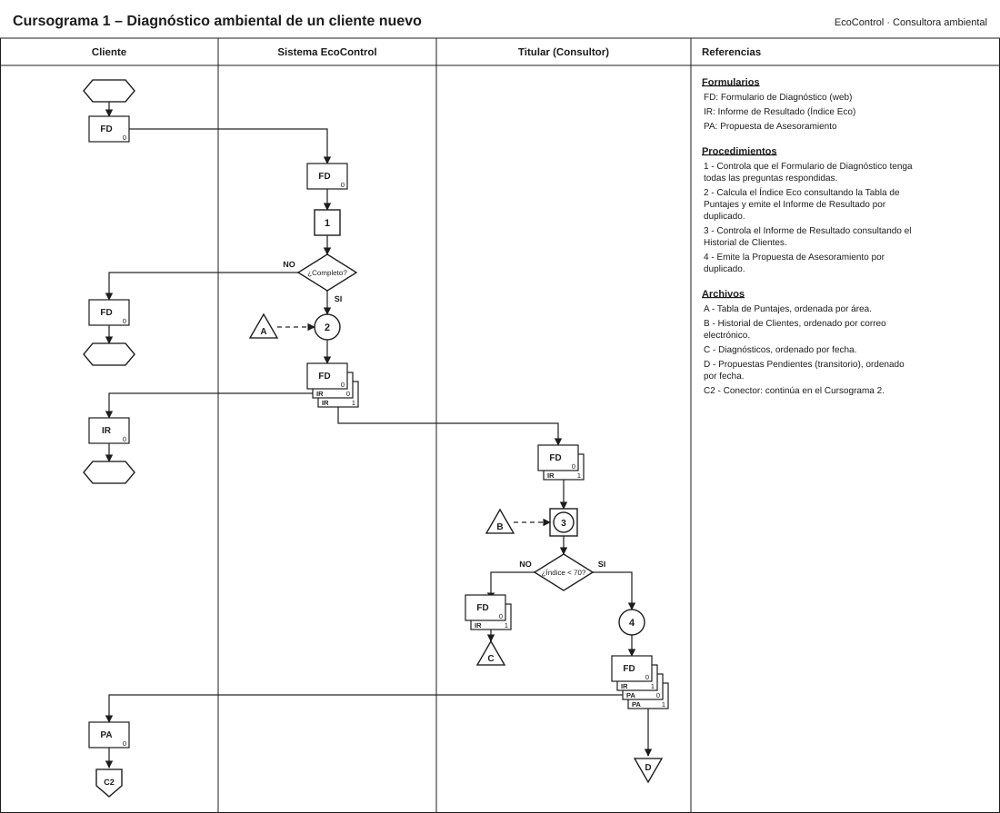
Cuando el Cliente acepta la Propuesta de Asesoramiento, completa la Solicitud de Asesoramiento desde su panel y la envía al Titular. El Titular controla la Solicitud consultando la Agenda de Turnos (ordenada por fecha). Si no hay turno disponible, coordina otra fecha con el Cliente. Si hay turno, lo registra en la Agenda y emite el Presupuesto: envía el original al Cliente y demora la Solicitud hasta recibir la respuesta. Cuando el Cliente devuelve el Presupuesto firmado, el Titular realiza la asesoría y emite el Plan de Mejora por duplicado; envía el original al Cliente. Luego emite la Factura C por duplicado, envía el original al Cliente y archiva definitivamente la Solicitud, el Presupuesto, el duplicado del Plan de Mejora y el duplicado de la Factura en Legajos de Clientes (ordenado por correo electrónico).
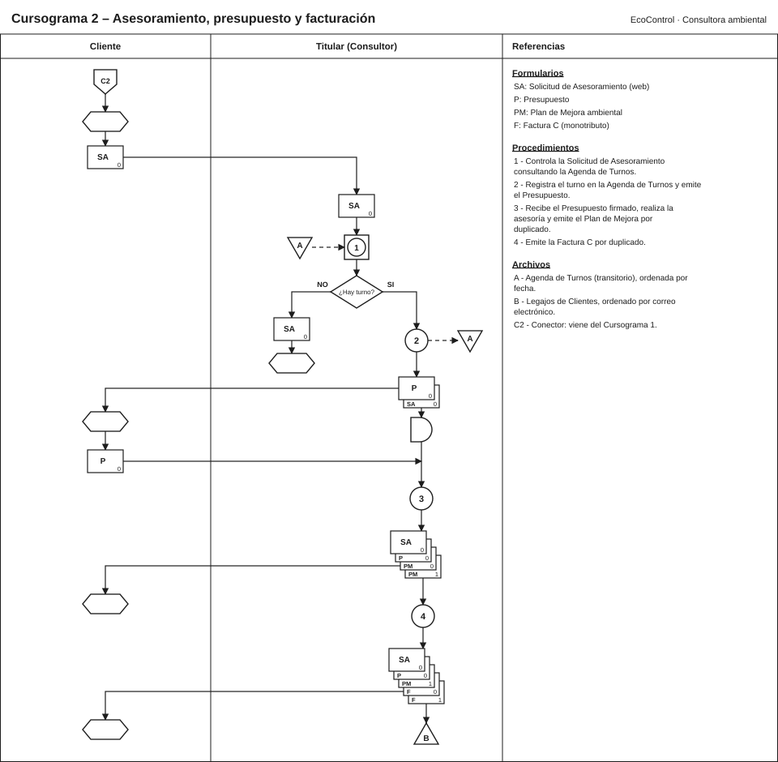
Fragmentos y explicación del código desarrollado.
ECOcontrol/
├── database/ecocontrol.sql ← tablas y usuario de prueba
├── servicio-node/ ← servicio de informes en Node.js
│ ├── servidor.js · informe.js · indice.js
│ └── pruebas/servicio.test.js
└── Frontend/
├── login.html · index.html
├── css/ styles.css · login.css
├── js/ sesion.js · login.js · app.js
├── img/ favicon, íconos y capturas
└── php/ conexion · login · registro · logout · recuperar
diagnosticos · asesoramiento · contacto
function calcularNivel(indice) {
if (indice >= 70) return 'Alto';
if (indice >= 40) return 'Medio';
return 'Bajo';
}
// Cada área vale el promedio de sus preguntas (0 a 100)
// El Índice Eco es el promedio de energía, agua y residuos
const indice = Math.round((areas.energia + areas.agua + areas.residuos) / 3);
async function llamarPHP(url, datos) {
if (!window.location.protocol.startsWith('http')) return null; // sin servidor
try {
const respuesta = await fetch(url, {
method: 'POST',
headers: { 'Content-Type': 'application/json' },
body: JSON.stringify(datos)
});
return await respuesta.json();
} catch (error) {
return null; // se usa el modo local (localStorage)
}
}
Se usan consultas preparadas (evitan la inyección SQL) y password_verify para comparar con la contraseña encriptada.
$consulta = $conexion->prepare('SELECT id, nombre, email, clave FROM usuarios WHERE email = ?');
$consulta->bind_param('s', $email);
$consulta->execute();
$usuario = $consulta->get_result()->fetch_assoc();
if (!$usuario || !password_verify($clave, $usuario['clave'])) {
responder(['ok' => false, 'mensaje' => 'El correo o la contraseña son incorrectos.'], 401);
}
$_SESSION['usuario_id'] = $usuario['id'];
CREATE TABLE diagnosticos (
id INT AUTO_INCREMENT PRIMARY KEY,
usuario_id INT NOT NULL,
fecha DATETIME NOT NULL DEFAULT CURRENT_TIMESTAMP,
tipo ENUM('Hogar', 'Negocio') NOT NULL,
indice TINYINT UNSIGNED NOT NULL,
nivel ENUM('Bajo', 'Medio', 'Alto') NOT NULL,
energia TINYINT UNSIGNED NOT NULL,
agua TINYINT UNSIGNED NOT NULL,
residuos TINYINT UNSIGNED NOT NULL,
recomendaciones TEXT NOT NULL,
FOREIGN KEY (usuario_id) REFERENCES usuarios(id) ON DELETE CASCADE
);
Node.js vuelve a calcular el índice con las mismas reglas que el navegador, así un cliente no puede mandar un puntaje falso. Se enciende con node servidor.js y responde en http://localhost:3000.
// Asegura que un puntaje sea un número entero entre 0 y 100
function limitarPuntaje(valor) {
const numero = Math.round(Number(valor));
if (Number.isNaN(numero)) return 0;
return Math.max(0, Math.min(100, numero));
}
// El Índice Eco es el promedio de energía, agua y residuos
function calcularIndice(energia, agua, residuos) {
return Math.round((limitarPuntaje(energia) + limitarPuntaje(agua) + limitarPuntaje(residuos)) / 3);
}
// Bajo: 0 a 39 · Medio: 40 a 69 · Alto: 70 a 100
function calcularNivel(indice) {
if (indice >= 70) return 'Alto';
if (indice >= 40) return 'Medio';
return 'Bajo';
}
Imágenes de las pantallas de la aplicación.
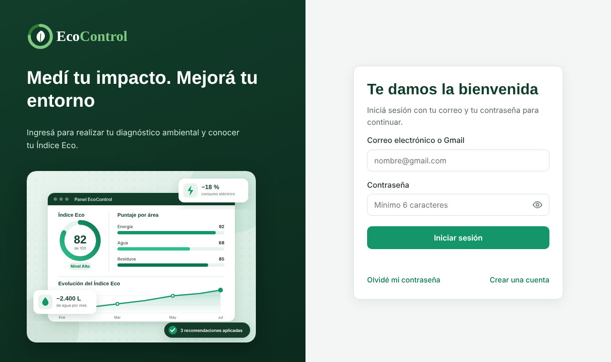
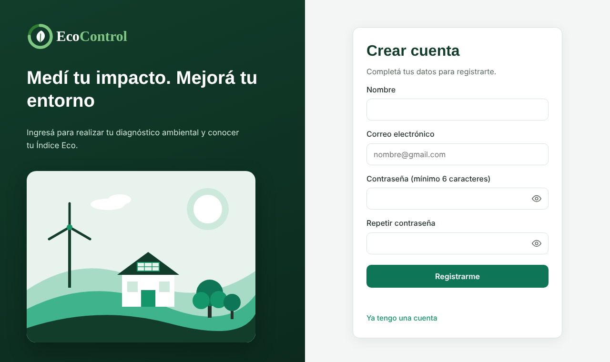
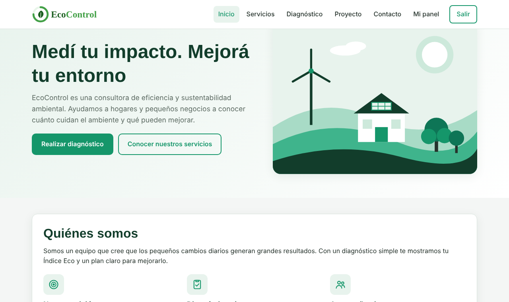
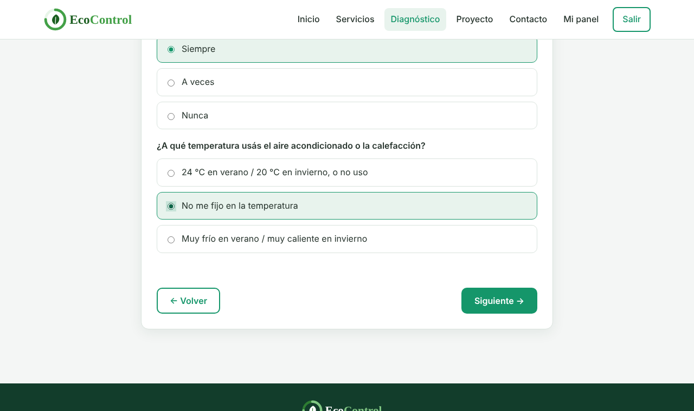
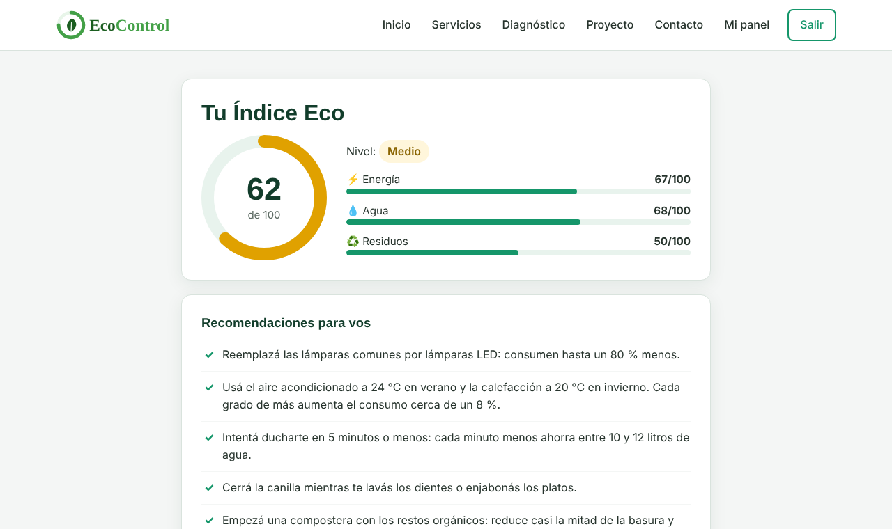
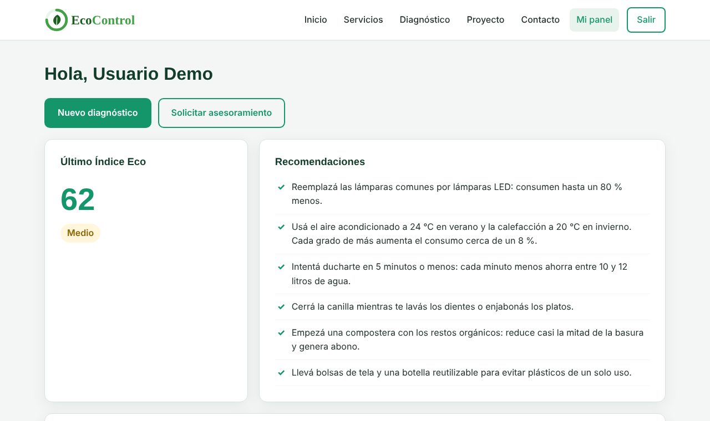
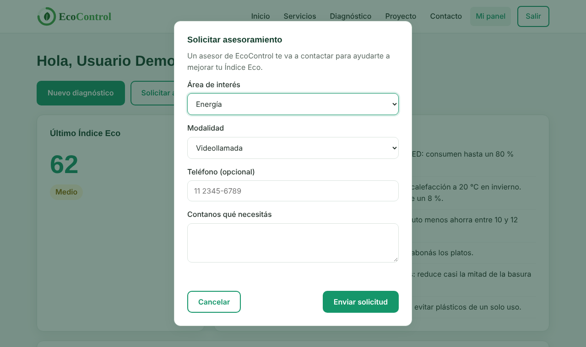
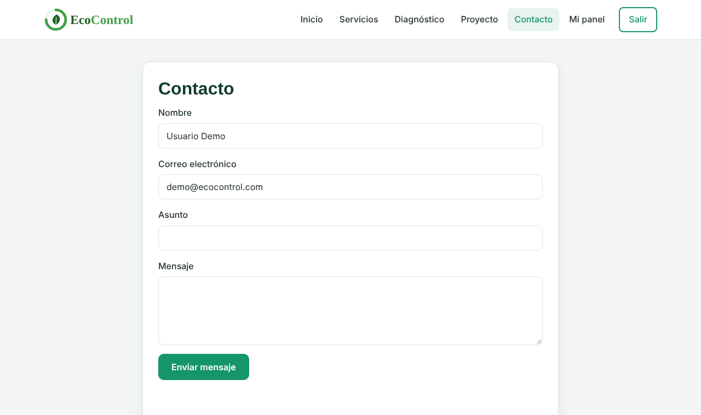
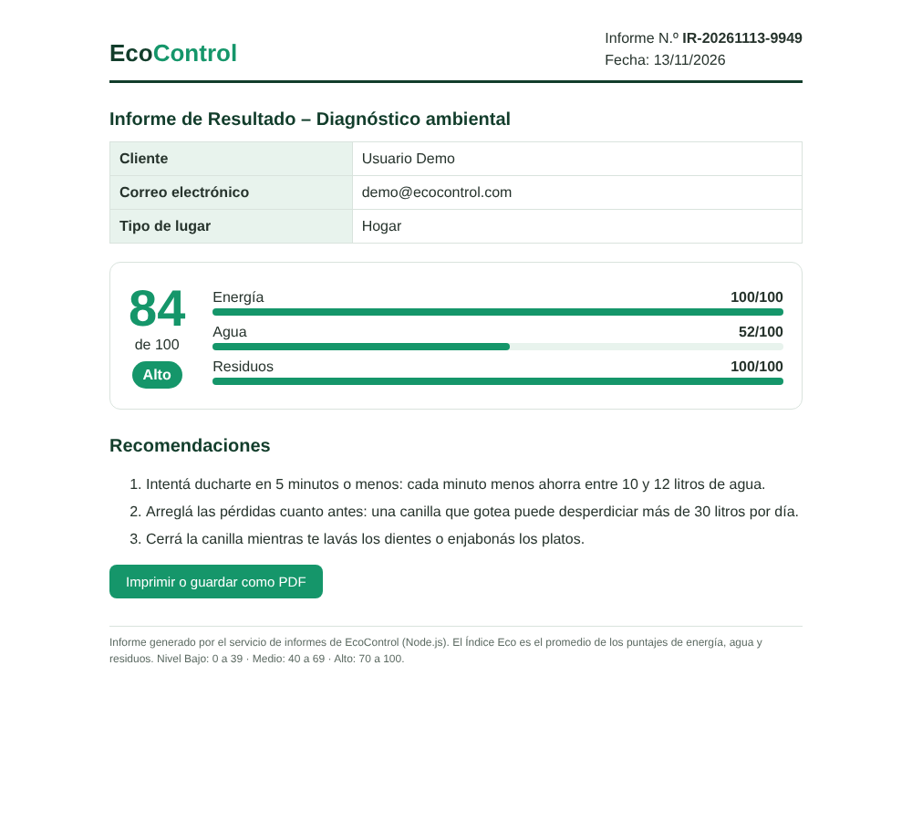
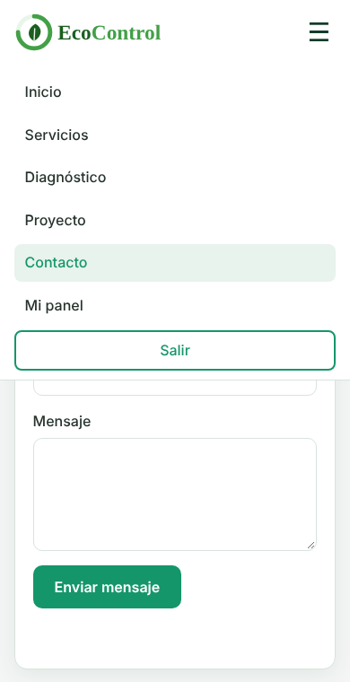
Guía paso a paso para usar la aplicación.
login.html. Escribí tu correo y tu contraseña y tocá Iniciar sesión. Con el ícono del ojo podés ver lo que escribiste.| Puntaje | Nivel | Significado |
|---|---|---|
| 70 a 100 | Alto | Hábitos muy sustentables. Mantenerlos. |
| 40 a 69 | Medio | Buen punto de partida, con mejoras posibles. |
| 0 a 39 | Bajo | Conviene aplicar las recomendaciones y pedir asesoramiento. |
Usuario de prueba: demo@ecocontrol.com · contraseña eco123
Detalle de costos del proyecto.
Estimación del costo de desarrollo y puesta en marcha. Las horas salen del trabajo real por módulo; el valor por hora y los servicios son valores de referencia que se deben actualizar con presupuestos vigentes al momento de presentar.
| Tarea | Horas |
|---|---|
| Análisis y relevamiento | 10 |
| Diseño UI/UX (pantallas, paleta, logo) | 16 |
| Maquetado HTML y CSS responsivo | 24 |
| Programación JavaScript (login, diagnóstico, panel) | 26 |
| Backend PHP y base de datos MySQL | 22 |
| Pruebas y correcciones | 12 |
| Documentación y manual | 10 |
| Total | 120 h |
| Concepto | Cálculo | Tipo |
|---|---|---|
| Desarrollo | 120 h × valor hora del desarrollador junior | Pago único |
| Dominio .com.ar (NIC Argentina) | Arancel anual vigente de NIC.ar | Anual |
| Hosting con PHP y MySQL | Plan básico de hosting compartido | Mensual / anual |
| Certificado SSL (HTTPS) | Let's Encrypt (incluido en la mayoría de los hostings) | Sin costo |
| Mantenimiento | 4 h por mes × valor hora | Mensual |
Valores, organización y forma de trabajo del equipo.
| Valor | Cómo se aplica |
|---|---|
| Compromiso ambiental | Cada recomendación busca un impacto real y medible. |
| Claridad | Explicamos los resultados con lenguaje simple, sin tecnicismos. |
| Honestidad | Mostramos el puntaje real aunque sea bajo y cuidamos los datos del cliente. |
| Mejora continua | Medimos, aplicamos cambios y volvemos a medir. |
| Trabajo en equipo | Consultores y desarrolladores comparten objetivos y revisan el trabajo juntos. |
| Rol | Responsabilidades |
|---|---|
| Dirección del proyecto | Planificación, contacto con clientes y presupuesto. |
| Desarrollo web | Frontend, backend, base de datos y pruebas. |
| Consultoría ambiental | Preguntas del diagnóstico, recomendaciones y asesorías. |
En este proyecto escolar los roles los cumple Santiago Villalba.
Normas de seguridad e higiene aplicadas.
Normas aplicadas al puesto de trabajo con computadora, según la Ley 19.587 de Higiene y Seguridad en el Trabajo y la Resolución SRT 295/03 (ergonomía).
| Riesgo | Medida aplicada |
|---|---|
| Robo de contraseñas | Se guardan encriptadas con password_hash. |
| Inyección SQL | Consultas preparadas con mysqli. |
| Código malicioso en textos (XSS) | JavaScript muestra los datos con textContent. |
| Acceso sin permiso | Sesiones de PHP: cada usuario solo ve sus diagnósticos. |
| Averiguar correos registrados | "Recuperar contraseña" responde igual exista o no la cuenta. |
| Pérdida de datos | Copias de seguridad de la base y del código en GitHub. |
Etapas y organización del trabajo del proyecto.
Se trabajó con un modelo incremental: el sistema se construyó por partes, y cada parte se probó antes de pasar a la siguiente.
| Etapa | Actividades | Resultado |
|---|---|---|
| 1. Análisis | Definir el problema, el público y las funcionalidades. | Lista de requisitos. |
| 2. Diseño | Paleta, tipografías, logo, pantallas y base de datos. | Diseño de pantallas y modelo de datos. |
| 3. Desarrollo | HTML y CSS, JavaScript, PHP y MySQL. | Sistema funcionando. |
| 4. Pruebas | Probar cada botón, formulario y validación, en PC y en celular. | Errores corregidos. |
| 5. Implementación | Instalar en XAMPP / hosting e importar la base. | Sistema en uso. |
| 6. Mantenimiento | Mejoras y corrección de errores nuevos. | Nuevas versiones en GitHub. |
El cliente repite el diagnóstico y compara su historial en el panel para ver si su Índice Eco mejora.
Resultado: 34 aprobadas, 0 fallidas y 1 pendiente de 35 pruebas. Entorno: Google Chrome (escritorio y celular), PHP 8.3 y Node.js 22. La prueba P-35 se realiza en XAMPP con MySQL.
| N.º | Módulo | Caso de prueba | Datos | Esperado | Obtenido | Estado |
|---|---|---|---|---|---|---|
| P-01 | Acceso | Entrar a la aplicación sin haber iniciado sesión | Abrir index.html directamente | Redirige a la pantalla de login | Redirigió a login.html | Aprobada |
| P-02 | Acceso | Login con correo con formato inválido | santiago@ / eco123 | Mensaje de correo inválido | Ingresá un correo electrónico válido. | Aprobada |
| P-03 | Acceso | Login con contraseña de menos de 6 caracteres | demo@ecocontrol.com / 123 | Mensaje de mínimo 6 caracteres | La contraseña debe tener al menos 6 caracteres. | Aprobada |
| P-04 | Acceso | Login con contraseña incorrecta | demo@ecocontrol.com / clave999 | Mensaje de contraseña incorrecta | La contraseña es incorrecta. | Aprobada |
| P-05 | Acceso | Login con correo no registrado | nadie@gmail.com / eco123 | Mensaje de cuenta inexistente | No existe una cuenta con ese correo. Creá una cuenta nueva. | Aprobada |
| P-06 | Acceso | Mostrar y ocultar la contraseña con el botón del ojo | Clic dos veces en el ojo | La contraseña se ve y luego se oculta | Tipo del campo: text → password | Aprobada |
| P-07 | Acceso | Recuperar contraseña | malcorreo y luego demo@ecocontrol.com | Error con correo inválido; confirmación con correo válido | «Ingresá un correo electrónico válido.» / «Si el correo está registrado, vas a recibir l…» | Aprobada |
| P-08 | Registro | Crear cuenta con contraseñas distintas | secreto1 / secreto2 | Mensaje de contraseñas que no coinciden | Las contraseñas no coinciden. | Aprobada |
| P-09 | Registro | Crear cuenta con un correo ya registrado | demo@ecocontrol.com | Mensaje de cuenta existente | Ya existe una cuenta con ese correo. | Aprobada |
| P-10 | Registro | Crear cuenta con datos correctos | Santiago / santiago@gmail.com / secreto1 | Crea la cuenta y entra a la aplicación | Entró a index.html#inicio | Aprobada |
| P-11 | Navegación | Cada opción del menú muestra su pantalla | Inicio, Servicios, Diagnóstico, Proyecto, Contacto, Mi panel | Se ve la pantalla elegida | 6 de 6 pantallas correctas | Aprobada |
| P-12 | Panel | Panel de un usuario sin diagnósticos | Usuario recién registrado | Mensaje «Todavía no hiciste ningún diagnóstico» | Mensaje visible | Aprobada |
| P-13 | Seguridad | Nombre con código HTML (intento de XSS) | <img src=x onerror=alert(1)>Santi | Se muestra como texto y no se ejecuta | Texto mostrado: «Hola, <img src=x onerror=alert(1)>Santi»; alertas ejecutadas: 0 | Aprobada |
| P-14 | Diagnóstico | Avanzar sin responder | Sin elegir opciones | Mensaje pidiendo responder todo | Respondé todas las preguntas para continuar. | Aprobada |
| P-15 | Diagnóstico | Volver al paso anterior conserva las respuestas | Responder energía, avanzar y volver | Las 3 respuestas de energía siguen marcadas | 3 respuestas marcadas | Aprobada |
| P-16 | Índice Eco | Todas las respuestas óptimas | Mejor opción en las 9 preguntas | Índice 100, nivel Alto, mensaje de felicitación | Índice 100, nivel Alto, 1 recomendación | Aprobada |
| P-17 | Índice Eco | Todas las respuestas desfavorables | Peor opción en las 9 preguntas | Índice 2 (energía 10/3, agua 10/3, residuos 0), nivel Bajo, 9 recomendaciones | Índice 2, nivel Bajo, 9 recomendaciones | Aprobada |
| P-18 | Índice Eco | Respuestas mixtas | Energía óptima, agua intermedia, residuos óptimos | Índice 84 = (100 + 52 + 100) / 3, nivel Alto, 3 recomendaciones de agua | Índice 84, nivel Alto, 3 recomendaciones | Aprobada |
| P-19 | Diagnóstico | Guardado del diagnóstico | Diagnóstico de P-18 | Mensaje de guardado en el historial | Diagnóstico guardado en tu historial (en este navegador). | Aprobada |
| P-20 | Servicio Node.js | Descargar informe con el servicio encendido | Botón «Descargar informe» del resultado P-18 | Abre el Informe de Resultado con índice 84 y nivel Alto | Informe abierto con índice 84, nivel Alto | Aprobada |
| P-21 | Servicio Node.js | Descargar informe con el servicio apagado | Node.js detenido | Aviso indicando cómo encender el servicio | El servicio de informes (Node.js) no está encendido. Abrí una terminal… | Aprobada |
| P-22 | Panel | Historial de diagnósticos | 3 diagnósticos completos (P-16, P-17, P-18) | 3 filas en el historial y último índice 84 | 3 filas, último índice 84 | Aprobada |
| P-23 | Asesoramiento | Solicitar asesoramiento | Primero sin mensaje y luego con mensaje | Error sin mensaje; confirmación con mensaje | «Contanos brevemente qué necesitás.» / «¡Solicitud enviada! Te vamos a…» | Aprobada |
| P-24 | Contacto | Enviar el formulario de contacto | Primero con asunto y mensaje vacíos, luego completo | Error con campos vacíos; agradecimiento con datos completos | «Revisá los campos marcados en rojo.» / «¡Gracias, Santiago! Recib…» | Aprobada |
| P-25 | Documentación | Pestañas de documentación del proyecto | Clic en las 10 pestañas | Cada pestaña muestra su contenido y cargan todas las imágenes | 10 de 10 pestañas; 11 de 11 imágenes cargadas | Aprobada |
| P-26 | Sesión | Recargar la página con la sesión iniciada | F5 en la pantalla Proyecto | Sigue en la aplicación y en la misma pantalla | Pantalla Proyecto visible: True | Aprobada |
| P-27 | Diseño responsivo | Menú en pantalla de celular | Ancho 390 px | Menú oculto, se abre con ☰ y se cierra al elegir | Antes: oculto, con ☰: visible, al elegir: oculto | Aprobada |
| P-28 | Diseño responsivo | Sin desplazamiento horizontal en celular | Ancho 390 px | El contenido entra en el ancho de la pantalla | Ancho del contenido: 390 px | Aprobada |
| P-29 | Sesión | Cerrar sesión | Botón Salir y después abrir index.html | Vuelve al login y no deja entrar sin sesión | Terminó en login.html | Aprobada |
| P-30 | Acceso | Login con el usuario de prueba | demo@ecocontrol.com / eco123 | Entra a la aplicación | Entró a index.html#inicio | Aprobada |
| P-31 | Backend PHP | Sintaxis de los archivos PHP | php -l en los 8 archivos | Sin errores de sintaxis | 8 de 8 archivos sin errores | Aprobada |
| P-32 | Backend PHP | Pedido GET a login.php | GET /php/login.php | Rechaza el pedido (código 405) | Código 405 | Aprobada |
| P-33 | Backend PHP | Login con MySQL apagado | POST a login.php sin base de datos | Mensaje claro indicando revisar MySQL en XAMPP | No se pudo conectar a la base de datos. Revisá que MySQL est… | Aprobada |
| P-34 | Servicio Node.js | Pruebas automáticas del servicio (npm test) | N-01 a N-06: cálculo, niveles, rangos, XSS, índice falso, rutas HTTP | 6 pruebas aprobadas | 6 aprobadas, 0 fallidas | Aprobada |
| P-35 | Base de datos | Registro, login y diagnósticos guardados en MySQL | XAMPP con la base ecocontrol importada | Los datos se guardan y se leen desde MySQL | Pendiente: se ejecuta en la computadora con XAMPP | Pendiente |